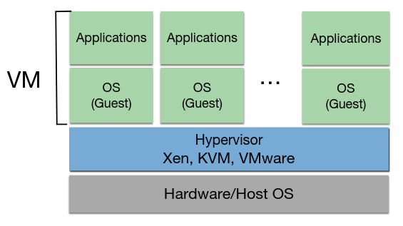

Teórica 05
Virtualização
- Técnica que permite criar algo virtual sobre um recurso;
- A ideia é criar uma abstração sobre um recurso qualquer (software ou hardware);
- Na cloud, falamos de virtualização a, praticamente, todos os níveis.
Exemplos:
- Redes Virtuais;
- Memória Virtual;
- Volumes de Armazenamento Lógicos.
Vantagens
Heterogeniedade
- Recursos virtuais podem ser providenciados sob diferentes recursos de hardware;
- Um recurso virtual poderá correr diferentes aplicações ou serviços utilizando o mesmo hardware (p.e. VMs a correrem em diferentes Sistemas Operativos).
Transparência
- A interação com uma VM, pela parte do utilizador, é semelhante à interação com uma máquina física.
Isolamento
- Os recursos virtuais são isolados uns dos outros em termos de:
- Segurança;
- Um cliente não sabe onde é que a máquina virtual se encontra a correr, nem que outras máquinas virtuais se encontram a correr naquele servidor.
- Desempenho;
- Depende do componente em questão.
- Falhas (incluido sistemas operativos ou dados corrompidos).
- A falha de 1 VM não afeta as restantes.
- Segurança;
Otimização de Recursos
- Os recursos físicos podem ser otimizados de forma a serem utilizados por diversos clientes.
- Consolidação do Servidor;
- Menos Custos.
Gestão + Fácil
- A gestão de recursos virtuais é mais simples do que a gestão de recursos físicos.
- Por exemplo, a migração e backups de VMs é muito mais fácil.
Desvantagens
Desempenho
- Geralmente, a virtualização de recursos traz uma penalty de desempenho associada.
- Devido à "tradução" de pedidos lógicos para pedidos físicos.
Overprovisioning
- Dar deploy a mais recursos virtuais do que os disponíveis fisicamente pode gerar degradação de desempenho.
Segurança
- O isolamento pode não ser bem feito (p.e. mal endereçado);
- Existem alguns bugs conhecidos nos hypervisors;
- Não oferece segurança contra quem acede diretamente ao servidor;
- Num sistema tradicional, um atacante teria acesso a apenas 1 serviço, no entanto, neste tipo de sistemas, um atacante terá acesso a uma grande quantidade de serviços.
Resiliência
- Se um servidor falhar, múltiplos serviços irão falhar.
Máquinas Virtuais
Porque é que surgiram?
- Para permitir correr diferentes Sistemas Operativos em simultâneo no mesmo servidor físico;
- Trocar uma aplicação/serviço para que este corra num Sistema Operativo diferente é uma tarefa difícil e custosa.
Arquitetura
- As instruções do Guest OS (isto é, da VM) são intercetadas, traduzidas e executadas no hardware físico.

Hypervisor
- Também conhecido por VMM (Virtual Machine Monitor);
- Controla a interação low-level entre as VMs e o sistema em que estas estão a correr;
- Providencia acesso à CPU, RAM, disco e recursos de hardware de rede do host.
CPU do Host
- Time Slicing - o processamento de pedidos são divididos e partilhados ao longo das VMs;
- Se tivermos vários cores \( \rightarrow \) utilização de 1 core por VM e evita-se este processo.
- Semelhante a correr múltiplos processos no host;
- Dar commitment a demasiados vCPUs pode gerar a pior desempenho.
RAM e Armazenamento Persistente do Host
- Cada VM tem 1 parte de RAM e 1 parte de disco do host associada;
- Não deverá interferir com a parte dos outros (tanto entre VMs, como com o host);
- De forma a manter o isolamento entre recursos;
- O hypervisor está responsável por não deixar o host interferir com a parte da VM.
- Armazenamento partilhado entre VMs poderá controlar múltiplos escritores/leitores eficientemente;
- Recursos de Armazenamento podem ser alocados conforme pedido (isto é, thin-provisioning).
Rede do Host
- As VMs partilham a largura de banda e podem ser configuradas com diferentes setups de rede:
- Host-only: Partilha a rede do host e só tem acesso ao host;
- NAT: Traduz o IP da VM para o IP do host e comunica com a rede exterior utilizando o IP do host. A comunicação da rede com a VM pode ser feita através de um protocolo de forwarding entre portas de rede;
- Bridge: Utiliza o hypervisor para obter um IP próprio para a VM. A VM é vista, na rede, como um nó de rede físico.
Modos de Virtualização
Full Virtualization
- O Guest OS é tratado de uma forma completamente abstrata ao hardware do host em que está a correr (p.e. VirtualBox);
- Vantagem: Não efetuar modificações para o Guest OS funcionar indica que existe uma maior quantidade de Sistemas Operativos suportados e uma maior facilidade de migração e portabilidade de VMs;
- Desvantagem: Todas as instruções da VM têm de ser traduzidas no hypervisor o que poderá provocar uma queda de desempenho.
- O hardware tem evoluído para combater isto.
- A introdução de Hardware-Assisted Virtualization (p.e. Intel VT-x, AMD-V) traz hardware específico para combater a penalty por tradução de instrução.
- O hardware tem evoluído para combater isto.
Paravirtualization
- Requere gatilhos/modificações ao Sistema Operativo da VM de forma a dar bypass às traduções de instruções custosas (p.e. Xen);
- Vantagem: Melhor performance, visto que não existe a tradução de instruções;
- Desvantangem: O Sistema Operativo do Guest tem de ser modificado, o que é pior para manutenção e portabilidade.
Tipos de Virtualização
Tipo 1 - Bare Metal Hypervisor
- O Hypervisor não precisa de Sistema Operativo de propósito geral no servidor de host (p.e. VMWare ESX);
- O Hypervisor é deployed diretamente no harware como se fosse um Sistema Operativo de pequena dimensão;
- Tem uma melhor performance, mas precisa de um suporte à virtualização específico no hardware, ou seja, é preciso hardware específico para correr isto.
Tipo 2 - Hosted Hypervisor
- O Hypervisor é lançado num Sistema Operativo "normal" (p.e. VirtualBox);
- Tem um pior desempenho, visto que o Sistema Operativo não é otimizado para virtualização;
Nota
- O KVM e o Xen apresentam uma solução híbrida dos 2 tipos apresentados.
- Os seus hypervisors precisam da instalação de módulos de kernel específicos em Sistemas Operativos "normais".